Basic Methods of Training Deep Neural Networks (DNNs)
Acknowledgement: This course (CSCI 8980) is being offered by Prof. Ju Sun at the University of Minnesota in Fall 2020. Pictures of slides are from the course.
Training DNNs: Basic Methods and Tricks
Three Design Choices
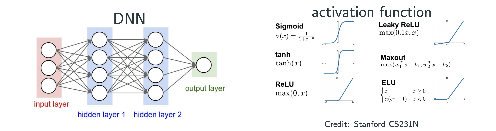
- Which activation at the hidden nodes?
- Which activation at the output node (Identity function is ok)?
- Which
?
Which activation at the hidden nodes?
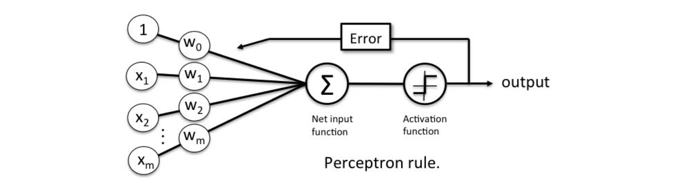
Is the sign() activation good for derivative-based optimization?
No, for following two reasons:
- derivative of sign activation in anywhere is 0
- not differentiable at origin
But why the classic Perceptron algorithm converges?
Because perceptron algorithm is not a gradiaent descent algorithm.
What we want for activation:
- Differentiable or almost everywhere differentiabkle
- Nonzero derivatives (almost everywhere)
- Cheap to compute
A positive example:
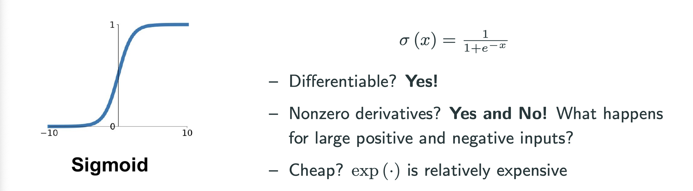
What about ?
- It’s differentiable.
- The gradient is similiar to sigmoid.
How about ReLU and ReLU’s variation?
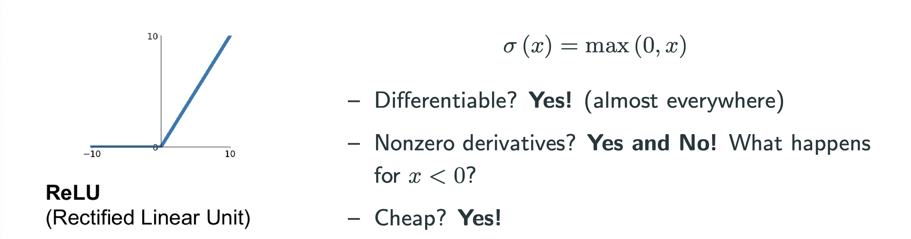
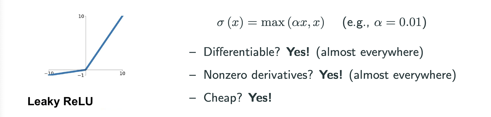
- ReLU and Leaky ReLU are the most popular
less preferred but okay; hypertan and sigmoid should be avoided
What do you think ofas activation, i.e, absulute value function? Acceptable.
Which activation at the output nodes?
Depending on the desired output:
- unbounded scalar/vector output (e.g., regression): identity activation
- binary classification with 0 or 1 output: e.g., sigmoid
- multiclass classification: labels into vectors via one-hot encoding
Softmax activation:
Which loss?
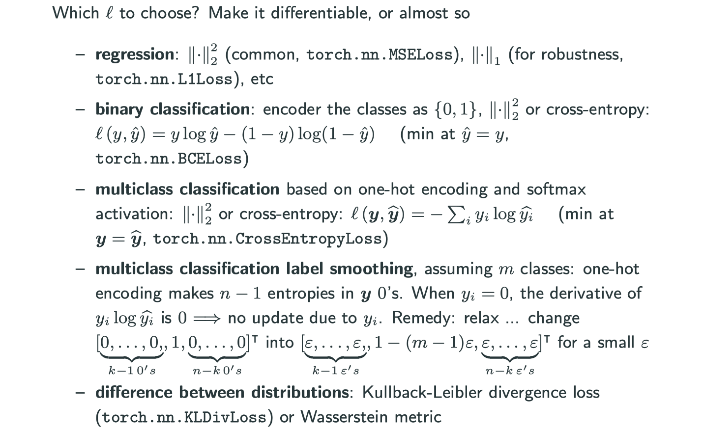
In multiclass classification label smoothing section and in one-hot encoding, we normally get the a vector with and all other entries
, but if we want to further turn our parameters,
is not likely to be helpful. So, we will use a small
instead of
so that information can be used later.
Training Algorithms
Recall our optimization problem:
What happens when is large, i.e., in the “big data” regime?
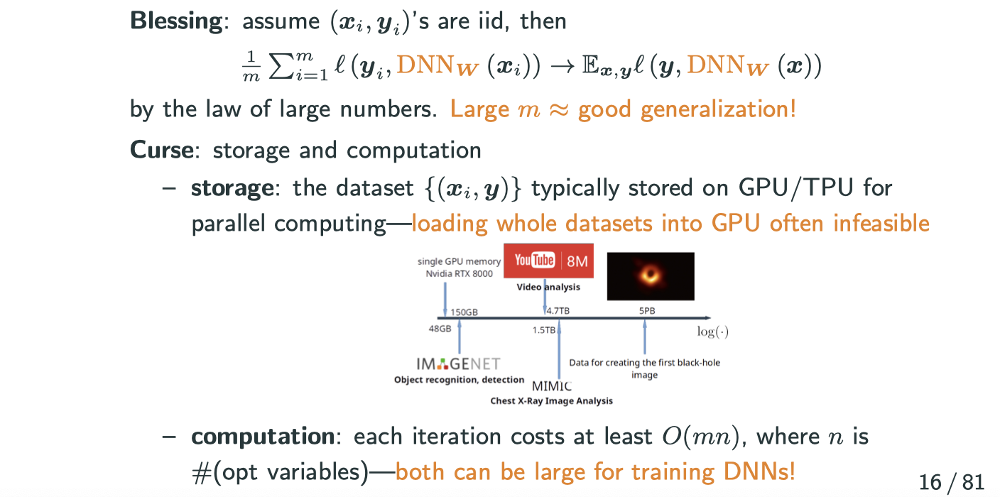
There is a intersting graph above. The GPU listed above is RTX 8000, which has 48G VRAM and around $5000 by the time of this blog. However, comparing to large dataset like MIMIC and ImageNet, it’s still really tiny little small.
How to get around the storage and computation bottleneck when is large?
Idea: use a small batch of data samples to approxiamate quantities of interest
- gradient:
approximated by stochastic gradient:
for a random subset , where
Stochastic Gradient Descent (SGD)
In general, suppose we want to solve
Idea: replace gradient with a stochastic gradient in each step of GD
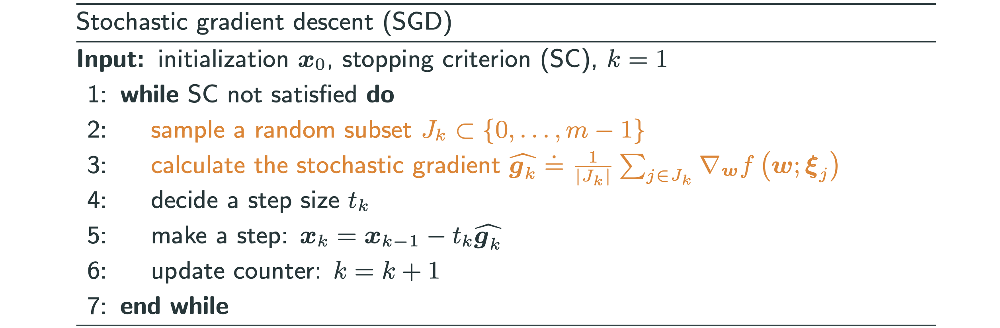
is a redrawn in each iteration. In traiditional SGD
, and the version presented is also called mini-batch gradient descent.
What’s an epoch?
- Canonical SGD: sample a random subset
each iteration–sampling with replacement.
- Practical SGD: shuffle the trainng set, and take a conscutive batch of size B (called batch size) each iteration–sampling without replacement one pass of the shuffled training set is called on epoch
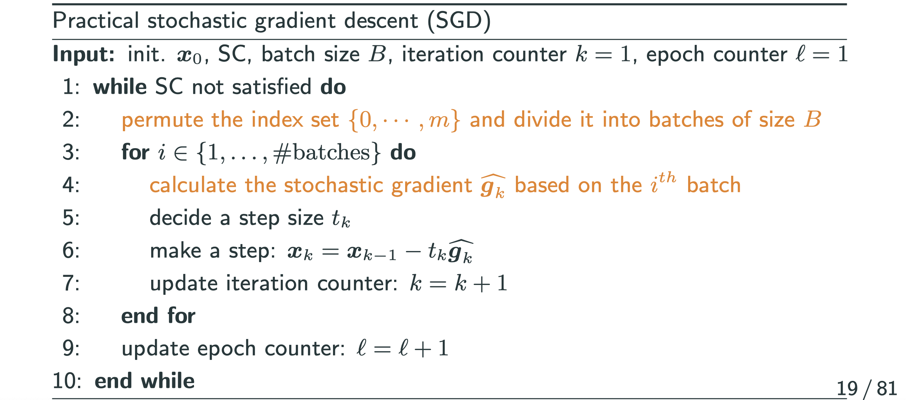
GD vs SGD
Consider , where
,
,
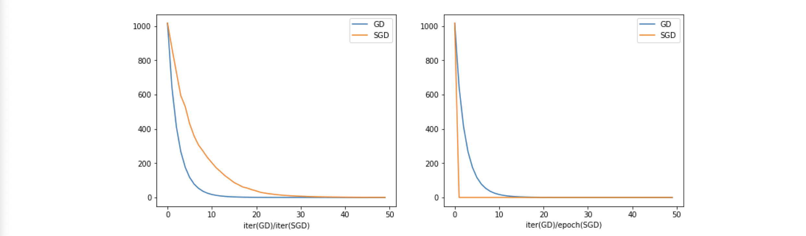
Having observed that SGD converges to the same value as GD, but why it seems like left graph SGD is slower than GD? That’s just a illusion, we should look at the right graph, because the right graph is about each epoch. For SGD, going through the entire dateset is going through one epoch.
- By iteration: GD is faster
- By iter(GD)/Epoch(SGD): SGD is faster
- Remember, cost of one epoch of SGD
cost of one iteration of GD!
Overall, SGD could be quicker to find a medium-accuracy solution with lower cost, which suffices for most purposes in machine. More on the reference below:
Step Size (Learning Rate (LR)) for SGD
Classical theory for SGD on convex problems requires
Practical implementation: diminishing , e.g.:
delay:
,
: tunable parameters,
: iteration index
- exponential delay:
,
- staircase delay: start from
, divide it by a factor (e.g., 5 or 10) every
(say, 10) epochs–popular in practice. Some heuristic variants:
- Watch the validation error and decrease the LR when it stagnates
- Watch the objective and descrease of LR when it stagnates
There are around 10 ways of choosing the step size (learning rate) in Pytorch, and Pytorch call them scheduler. Check it out torch.optim.lr_scheduler
Why SGD with adaptive learning rate?
One great complain of SGD is that if the conditioning of the function is not good, i.e., if you have a coutour plot that every time you take a step the direction is almost orthogonal with last step, SGD is sturggling a lot in moving.
Even if we can deal with it by Newton’s method, Quasi-Newton’s method and momentum methods, it’s still expensive. Here is a idea: if decompiosing your gradient direction to coordinate directions, e.g., x-direction and y-direction, if the magnitude of coordinate directions have very different values, it will have really bad effect on optimization. The solution is that if the gradient toward a certian coordinate direction is always large, I can divide the component of that direction by a large number, so that I can reduce the magnitude toward that direction. In other words, I want to amplify coordinate direction where gradient is always small, and I want to surpress cooprdinate direction where gradient is always large. How to do that?
Method 1: Adagrad
Adagrad: divide by historic gradient magnitudes in the
coordinate. If the historic gradient is small, then I divide
by it I will get a larger value; vice versa.
At the iteration, for all
:
or in elementwise notation
Write . Note that
. So only need to incrementally update the
sequence, which is cheap.
In PyTorch, check out torch.optim.Adagrad
But Adagrad have a problem in the way of its accumulating, after a great number of iterations, the step will turn out to be super small. In fact, it stops doing the gradient descent, that’s also why we introduce Method 2 below.
Method 2: RMSprop
The idea of RMSprop comparing to Adagrad is that we won’t accumulate all the historic gradients, but only using recent historic gradient. It will gradually phase out the histroy.
For some ,
Obvisouly, even though we’re summing up all historic gradient magnitude squares coordinatewise, but due to the value of is between 0 and 1, the previsou history will become less and less important to the current gradient.
Method 3: Adam
Two most popular SGD methods:
- SGD with momentum
- Adam
The idea of Adam is to combine RMSprop with momentum methods:
(combine mumentum and SGD)
(scaling factor update as in RMSprop)
- Combination:
Good to know:
Typical parameters:
Check out torch.optim.Adam
Diagnosis of LR
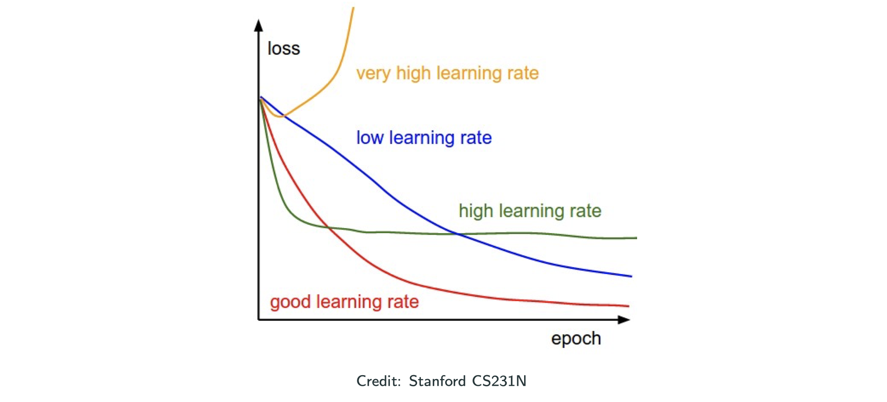
If you loss function blows up, it means you shall descress your learning rate. Low LR always leads to convergence, but takes forever. Permature flatten is a sign of large LR; permature sloping is a sign of early stopping–increase the number of epochs! Remember the starecase LR schedule.
Why adaptive methods relevant for DL?
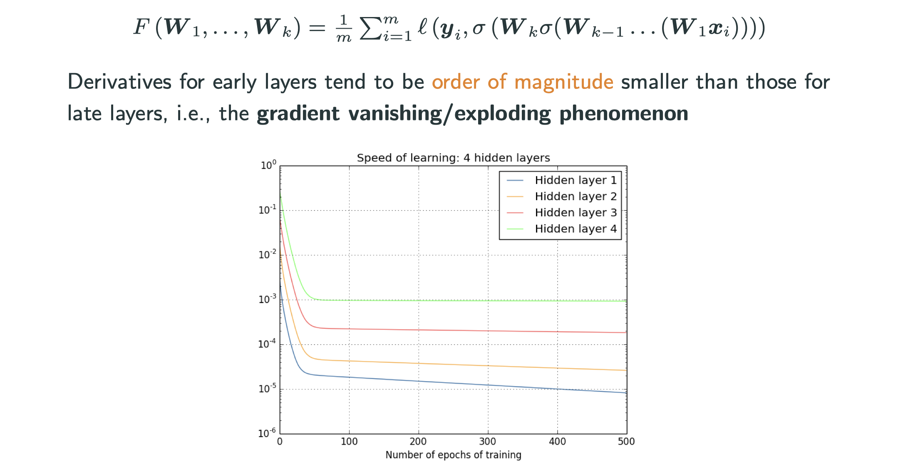
The gradients have really different magniture across layers, and the trend is consistent. See more discussion adn explanation in http://neuralnetworksanddeeplearning.com/chap5.html
Where to initialize for DNNs?
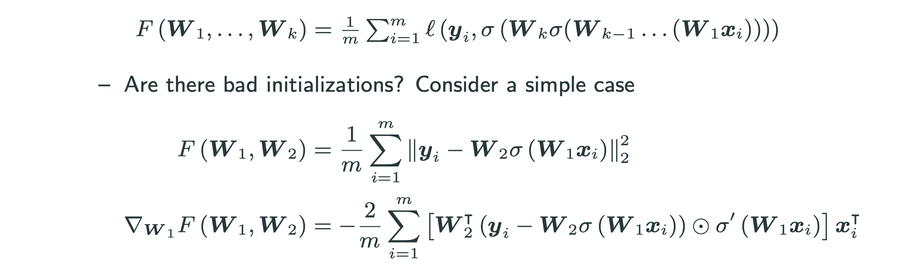
- What about
?
– no movement on
- What about very large (small)
? Large (small) value & gradient – the problem becomes significant when ther are more layers.
There are some principled ways of initialization
- torch.nn.init.xavier_uniform_
- torch.nn.init.kaiming_uniform_
- torch.nn.init.orthogonal_
When to stop?
Recall that a natrual stopping criterion for general GD is for a small
. Is this good when training DNNs?
No, the gradient in DNNs is always SGD, so it doesn’t make sense to use norm of gradient or Hessian as a stopping value. Also, computing each iteration is expensive.
A practical\pragmatic stopping strategy for classification: early stopping
periodically check the validation error and stop when it doesn’t improve, because people believe that after this point it starts to be overfitting